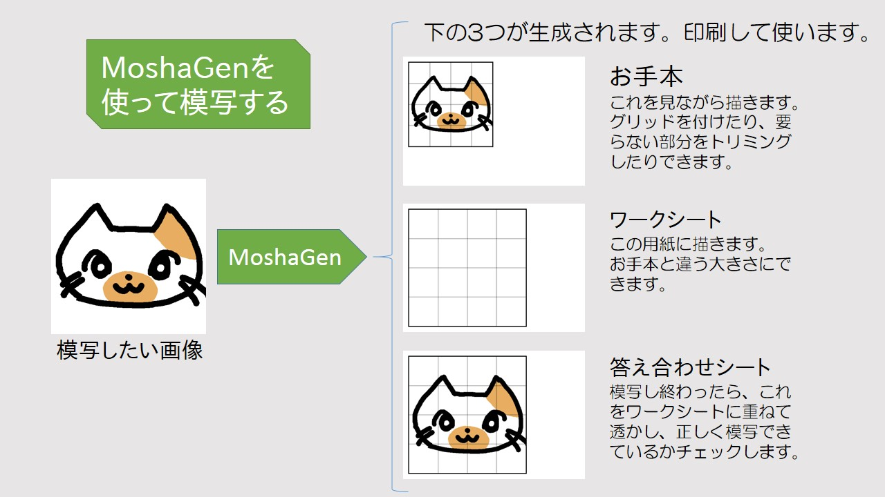
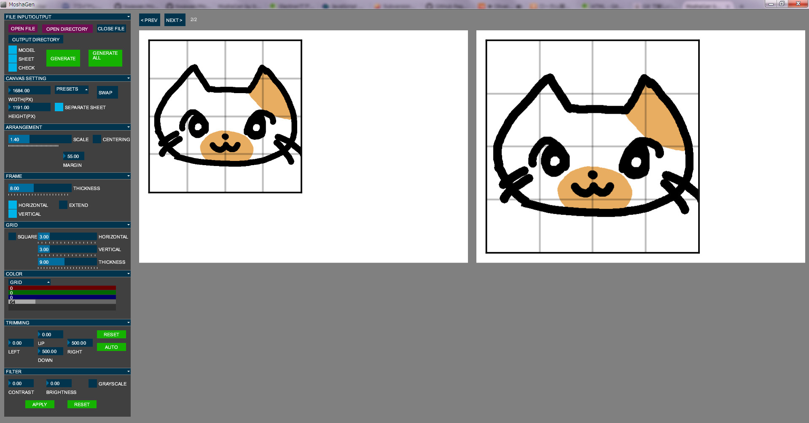

どんなソフト？
MoshaGenは、絵を描く人の模写練習をサポートするソフトです。 模写したい画像ファイルからお手本・ワークシート・答え合わせシートを生成します。
スクリーンショット
使い方
画像の生成
- MoshaGen.exeを起動します。ファイルを開くように求められるので、模写したい画像を読み込みます
- 左側のパネルで、グリッドや倍率を好みに調整します。（詳細）
- 左上の"GENERATE"を押して画像を生成します。元のファイルと同じ場所にお手本・ワークシート・答え合わせシートが生成されます。ファイル名は元ファイル名の末尾にそれぞれ_M, _S, _Cが付いたものになります。
模写
- 生成した画像を印刷します。
- お手本を見ながら、ワークシートに模写します。
- 描き終わったら、答え合わせシートを重ねて透かして答え合わせします。